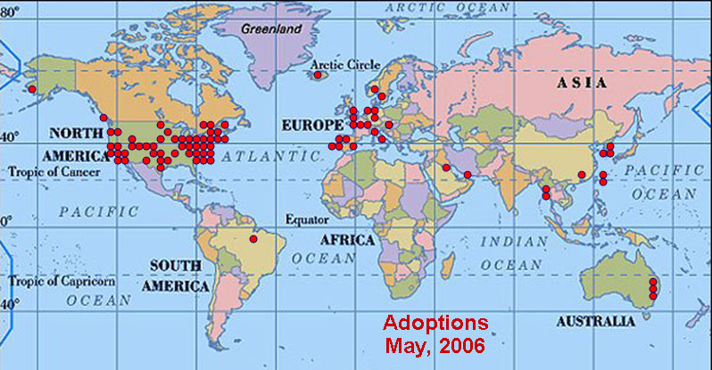

Adoptions for
Computer Systems: A Programmer's Perspective (CS:APP)
Randal E. Bryant and David R. O'Hallaron
CS:APP Home Page


Here is a partial list of schools that have adopted the CS:APP textbook.
United States and Canada (partial list)
- Algonquin University
- Appalachian State University
- Benedicting College
- Bethel University
- Boston College
- Bowie State University
- Brigham Young University
- Brigham Young University - Idaho
- Brown University
- California Institute of Technology (Cal Tech)
- California State University, Fresno
- Carnegie Mellon University
- Claremont College
- Clarkson University
- Clemson University
- College of William and Mary
- Cornell College
- DePaul University
- D'Youville College
- Duquesne University
- Ellis College of NYIT
- Franklin University
- George Mason University
- George Washington University
- Georgetown University
- Harvard University
- Harvey Mudd College
- Hood College
- Illinois Institue of Technology
- Ithaca College
- Kentucky Wesleyan College
- Lafayette College
- Laval University
- Memorial University (Newfoundland and Labrador, Canada)
- Middlebury College
- Northwestern University
- Ohio Wesleyan
- Oklahoma State University
- Penn State
- Penn State Erie, The Behrend College
- Plattsburgh State University of New York
- Plymouth State University
- Portland State University
- Portland Community College, Rock Creek
- Portland Community College, Sylvania
- Purdue University Calumet
- Rensselaer Polytechnic Institute (RPI)
- Rice University
- Rocky Mountain College
- Rutgers University
- Saint Michael's College
- San Diego State University
- San Jose State University
- Sonoma State University
- Stanford University
- Stillman College
- Stuyvesant High School, New York City
- Temple University
- Texas A&M University
- Trinity College, Hartford
- Tufts University
- University of Alaska, Fairbanks
- University of British Columbia
- University of California, Los Angeles
- University of Delaware
- University of Illinois, Chicago Circle
- University of Chicago
- University of Maine
- University of Maryland, College Park
- University of Massachusetts, Lowell
- University of Memphis
- University of Michigan, Flint
- University of Minnesota
- University of Mississippi
- University of Nebraska
- University of North Dakota
- University of Oklahoma
- University of Pennsylvania
- University of Pittsburgh, Johnstown
- University of Rhode Island
- University of Rochester
- University of San Francisco
- University of South Carolina
- University of Texas, Austin
- University of Texas, El Paso
- University of Toronto
- University of Utah
- Villanova University
- Washington University, St. Louis
- Westminster College, Salt Lake City
- West Texas A&M University
- Wilberforce University
- Yale University
- Yeshiva University
International (partial list)
If you're using the book and would like your school added to the list,
please send a note to
Randy Bryant and Dave O'Hallaron.
- Birla Institute of Technology and Science(Pilani, India)
- Christian-Albrechts-Universitaet zu Kiel (Germany)
- ETH (Switzerland)
- Flinders University (Australia)
- KAIST (Korea)
- Konkuk University (Korea)
- KTH - Royal Institute of Technology (Sweden)
- Kuwait University
- National Taiwan University of Science and Technology
- National Tsing Hua University of Taiwan
- Pohang University of Science and Technology (Korea)
- Polytechnic Institute of Braganca (Portugal)
- Seoul National University (Korea)
- Shanghai JiaoTong Univ (China)
- Shenzhen University (China)
- Sirindhorn International Institute of Technology (Thailand)
- Sung Kyun Kwan University (Korea)
- Thammasat University (Thailand)
- UFF - Computer Science Institute (Brazil)
- Universida de Nova de Lisboa (Portugal)
- Université Denis Diderot (France)
- Université Joseph Fourier (France)
- Université Henri Poincarre (France)
- University of Amsterdam (Netherlands)
- University of Iceland
- University of Minho (Portugal)
- University of Muenster (Germany)
- University of Newcastle (UK)
- University of Oslo (Norway)
- University of Salerno (Italy)
- University of Sannio (Italy)
- University of Surrey (UK)
- University of Sydney (Australia)
- Universtat Politecnica De Catalunya (Spain)
- University of Queensland (Australia)
Randy Bryant and Dave O'Hallaron
Last modified: Fri Dec 14 18:15:54 EST 2007